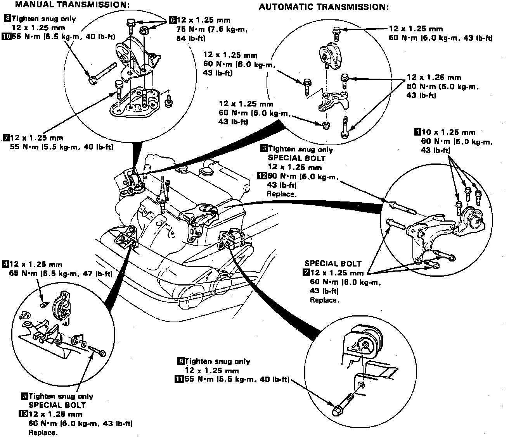

Engine: Service and Repair
Fig. 4 Fuel Pressure Relief:

1. On models equipped with radio coded theft protection system, refer to Vehicle Damage Warnings for system disarming and arming procedures. On models equipped with airbag system, refer to Technician Safety Information for system disarming and arming procedures.
2. Secure hood open as far possible, then disconnect battery ground and positive cables.
3. Remove radiator cap, then raise and support vehicle.
4. Remove front wheels and engine splash shields.
5. Drain cooling system, engine oil and transmission fluid.
6. Lower vehicle, then relieve fuel pressure and remove fuel filler cap. Place shop towel over area, then slowly loosen service bolt on fuel filter one turn at a time, Fig. 4.
7. Remove the airflow tube and air cleaner case.
8. Remove battery and battery case, then disconnect transmission ground cable.
9. Disconnect two distributor connectors, then remove distributor.
10. Disconnect engine wire harness connector on lefthand side of engine compartment.
11. Loosen throttle cable locknut, then pull cable end from bracket and accelerator linkage.
12. Disconnect engine harness electrical connectors, then remove clamp.
13. Disconnect power cables from underhood fuse/relay box, then the emission control vacuum hoses from intake manifold.
14. Disconnect brake booster vacuum hose and fuel return hose.
15. Disconnect engine ground cable from cylinder head.
16. Remove power steering pump attaching bolts, then remove power steering belt. Without disconnecting hoses, pull pump rearward and position aside.
17. Remove A/C belt, then the A/C compressor leaving refrigerant line attached.
18. Disconnect alternator connectors, then remove attaching bolts and alternator.
19. Disconnect radiator hoses and heater hoses.
20. On automatic transmission models, remove cooler lines.
21. Remove speed sensor. Do not disconnect power steering oil hoses.
22. Remove cooling fan, then front exhaust pipe.
23. On manual transmission models, Remove clutch cable, then shift lever torque rod and shift rod.
24. On automatic transmission models, remove torque converter cover.
25. Remove cable holder, cotter pin and control pin, then the shift control cable.
26. Attach suitable chain hoist to engine and remove slack from chain by lifting engine.
27. Remove rear transmission mount and mounting bracket.
28. Remove front transmission mount, then the side transmission mount and mounting bracket.
29. Remove side engine mount, then ensure engine and transaxle are free of vacuum, fuel or coolant hoses and electrical connectors.
30. Remove engine assembly.
Fig. 5 Engine & Transaxle Mount Tightening Sequence:

31. Reverse procedure to install. Install and tighten engine mounts in sequence as shown in Fig. 5.
32. On models equipped with radio coded theft protection system, refer to Vehicle Damage Warnings for system disarming and arming procedures. On models equipped with airbag system, refer to Technician Safety Information for system disarming and arming procedures.